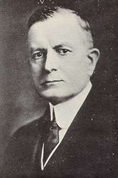

From the time of his appointment until his passing on June 19, 1956, Thomas John Watson Sr., an American businessman born on February 17, 1874, served as chairman and CEO of IBM. He helped the company develop into a powerful force between 1914 and 1956. While creating IBM's management philosophy and organizational culture, Watson drew inspiration from John Henry Patterson's education at NCR. He developed the business into a highly efficient sales organization that was mostly dependent on punched card tabulating equipment. The well-known self-made industrialist who died in 1956 was regarded as history's greatest marketer. Additionally, he was one of the richest people in his era.
| Year of Birth | Year of Death |
|---|---|
| February 17, 1874 | June 19, 1956 |